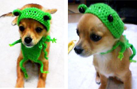
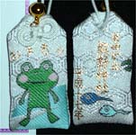
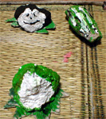

カエル愛犬をカエル化！ 【東京発けろねこや同志記者】会社のカエラー同志の愛犬用に毛糸でかえる帽子とオプションの胴体を編みました。日々この姿で散歩をして愛嬌を振りまき、新たなカエラー獲得に努めてくれています。 東京都江戸川区ではすれ違う人の注目を集める人気者らしいです。version1が標準装備、version2がマント仕様です。胴体は取り外し可能です。 かえる帽子＆胴体は好評なので、もう少し商品を増やして将来けろ天市場にお店が出せたらいいな〜。HPできたら報告します。【全国かえる奉賛会】おおおおおお。ケロ天市場に出展してほしいぞおおお。これはもう、人気爆発間違いなしなのである。これで、愛犬と飼っている人も寒さも安心だああああああ。夏でも着用してほしいぞおおおお。ついでに人間用もないのであろうかああ。
初詣でめでたいカエル守り！ 【東京発けろねこや同志記者】新年おめでとうございます。東京自由が丘にある熊野神社へ初詣に行きました。お目当ては「無事かえるお守り」。表はかえる様、裏はおたま２匹のラブリーなデザイン。通販可能なので、遠方の方も手に入れることができます（http://www.kumano-jinja.or.jp/omamori.html）。なお、添付写真は今年の年号が入った限定版です。 以上、ご報告まで。今年もカエル新聞を楽しみにしています。昨年１１月にカエル新聞と出会い、毎日会社の昼休みにカエル古新聞を見て、至福の昼休みを過ごしています。まだすべて目を通しきれていません。大王様の長年のご活躍に脱帽です。
【全国かえる奉賛会】通販可能なんですねええ。これはすごい、裏のおたまデザインもいけてますなああああああ。これはカエラー推薦の神社です。来年の初詣は、関東地区の人々は、熊野神社にでかけましょう。
すすむてつろうさまカエルオブヂェ！ 【薩摩発すすむてつろう様】かえるオブジェを制作しました。僕のページでも少し紹介しましたが新年号へお送りいたします。
【全国かえる奉賛会】すすむてつろうさまから、手製のオブジェが到着しましたあああ。カエルがいろんな石で再現されているものです。こいつは新年から縁起がいいぜえええええっ！！！
昨年の大河ドラマの主役はカエルだったあああああ！！！【福岡発ごま蛙同志記者】昨年はＮＨＫの大河ドラマ「新選組！」にハマって、毎週ビデオ録画までして繰り返し見ておりました。第６回では、メリケン人のヒュースケンが開国を勧め、「井の中の蛙、大海を知らず」と言ったのに対し、近藤勇が「されど空の高さを知る」と応じます。 第４９回（最終回）は近藤勇の斬首の回ですが、座らされた近藤の前に、小川で泳ぐカエルの姿が大写しになります。死を目前に控えた近藤の胸に去来したのは、故郷・多摩のカエルだったことでしょう。 ここで、一年間見続けた視聴者に明らかになったのです。昨年の大河ドラマの真の主役がカエルだったということが。 京の街で不逞浪士を斬ってきた新選組でしたが、最後まで変わらずに彼らの前に存在したものは、カエルだったのです。 今年の大河ドラマ「義経」のテーマがカエルであるのかどうか、続けて検分したいと思います。
【全国かえる奉賛会】えええー。そうだったのかああ。大王は新撰組をぜんぜんみていなかったので、さっぱり気が付かなかったあああ。近藤勇って、なんで降伏したんだろおお。土方みたいに最後まで戦ってほしかったなーっ
カンフーハッスルに必殺ガマ功登場！【福岡発なぞの主婦様】カンフーハッスルに登場する邪神の必殺技は、なんとおお、ガマです。そういえば、不正常人類研究所の地下室の廊下には、ガマだたくさんいたようなきがします。あれが伏線だったんですね。最終段階で、如来神拳を、蝦蟇功が撃ち破ってほしかったなああああああああああああ。ケロ天市場にマープラント発売開始！【ケロ天市場】かえるグッズを扱うけろテン市場にmerpreinte.（マープラント）が開店したぞおお。 大阪でデザイン業をしている店長が、カエル柄のオリジナルで雑貨を作っている。frogcheckといいまして、文字どおりカエルチェック柄のシリーズが発売開始だああ。カエル新聞縮刷版は今年発行へ！朝日新聞縮刷版とともに、図書館に並ぶ日も近いであろう。年内発行だからなー。みんな、これまで以上に「かえる新聞」での報告をまっていてくれえええ。 ところで、縮刷版は、過去の全部の新聞を収録したいところぢゃが、収録件数の制限があって、全部とはゆかないのぢゃ。大王が選択するので、まかせてほしいのだが、もしも、投稿したねたが、縮刷版に収録するのは、ちょっとなーと思っている人は、早めに教えてほしい。大王あてメール→大王様へのメールwakuro-3@hf.rim.or.jp
収録からはずすこともできます。 携帯で携帯＠カエル新聞を吸い取ろう！ 【全国かえる奉賛会】携帯から初めてカエル新聞を見たいというひとにとっては、アドレスを打つのが難儀なものよのう！そこでドコモとボーダフォンの一部機種から、カメラをかざしてコードを読みとるんぢゃああ。なお、このQRコードを眺めていたらカエルやらオタマジャクシやらが浮かび上がってくるらしいぞおお。ほんとかああ。
【全国かえる奉賛会】携帯から初めてカエル新聞を見たいというひとにとっては、アドレスを打つのが難儀なものよのう！そこでドコモとボーダフォンの一部機種から、カメラをかざしてコードを読みとるんぢゃああ。なお、このQRコードを眺めていたらカエルやらオタマジャクシやらが浮かび上がってくるらしいぞおお。ほんとかああ。
|
メールマガジン登録
メールマガジン解除
Powered by


かえる古新聞過去に取り上げた記事を見出し付きで一覧したい人は、ここをクリック◆創刊号を見る◆前号を見る◆話題の号を見る◆かえる新聞の昔を読む
|
私も入っています。。全国かえる奉賛会
大王様に会うには、このバナーをクリック。ずっと奥に写真館があるぞ。全国かえる奉賛会に入会するには、自分のホームページのどこかに、下の部分を追加するとバナーがリンク付きで表示されるぞ。どんどん入会しましょー |


|